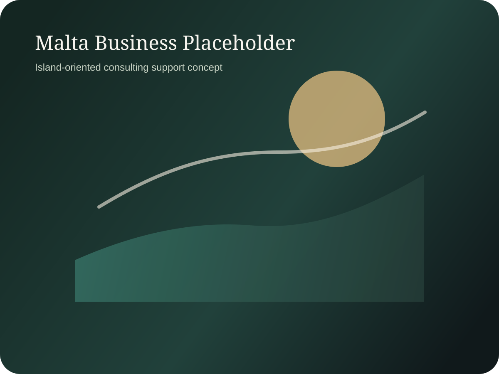

Consulting
Relocation Services
Operational relocation support and practical cross-border coordination outside the scope of legal advice.

Relocation Services
Relocation coordination can include introductions, process guidance and practical support around administrative, commercial and service-provider interfaces. Where legal advice is required, it should be obtained separately through qualified legal professionals.
This page structure makes it easier to expand the relocation scope later without overloading the main consulting overview page.